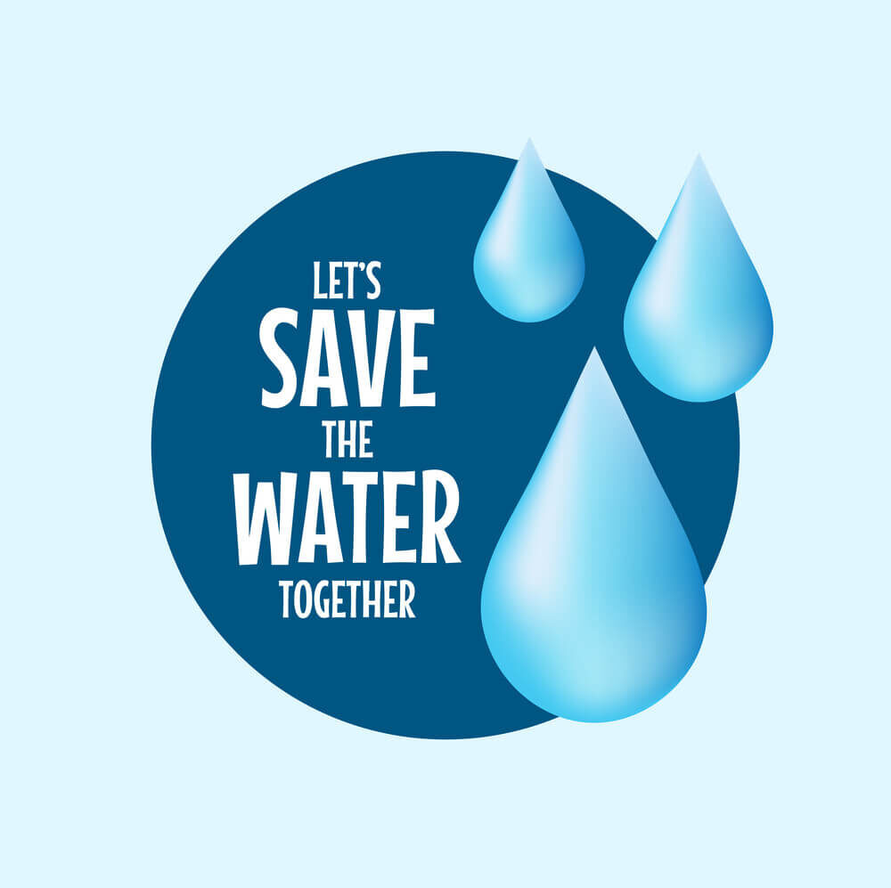
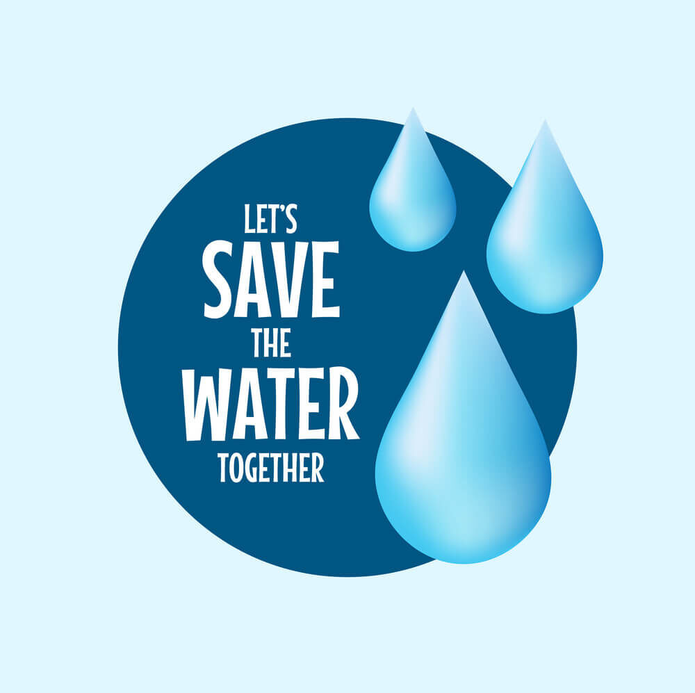

Water is one of the essential resources required for the existence of all living beings on planet Earth. Learning to use only what is required and preserving it is the only way to save water for our generations and the generations to come. In this article, you will come across the importance of saving water. There are also some catchy slogans on 'save water', which you can refer to write some slogans on your own. You can use them to create awareness among your fellow human beings, and together, you can take steps to preserve the water around you.

 

Water is one of the most fundamental necessities of life. Water covers most of our planet and our body. Life would not be nearly possible without water.
Water is essential for the proper functioning of our kidneys and other functions of the body. It can be said that human beings can live even without food but can, in no way, exist without water. Water is the most vital nutrient for every cell and acts as a building block. It keeps the body hydrated and regulates the body temperature. There is a certain quantity of water intake that is required for healthy living; without which, a lot of abnormalities in body weight and diseases begin to change our lives for the worse.
Throughout history, there have been many issues over water resources between states and many movements to conserve and preserve water. With the changing global climate, it is the need of the hour to understand the importance of preserving our water resources to be able to live a long healthy life.
A single dripping tap can waste up to 20,000 liters of water per year. Regularly check and fix leaking faucets to prevent unnecessary wastage.
Cut your shower time by 2 minutes and save up to 40 liters of water each time. Consider installing a low-flow showerhead to further reduce consumption.
Using drip irrigation can save up to 60% of water compared to conventional methods. It delivers water directly to plant roots, minimizing evaporation.
Dual-flush toilets use up to 67% less water than conventional ones. Consider upgrading or placing a displacement device in the tank to reduce water usage.
Collect rainwater for gardening, washing cars, and other non-potable uses. A simple rain barrel can save thousands of liters during the rainy season.
Run washing machines and dishwashers only when full. This can save up to 3,700 gallons of water per household each year.
Millets can significantly save water compared to traditional staple crops like rice and wheat. They are particularly advantageous in regions facing water scarcity. Here are some key points regarding their water-saving potential:
Millets require up to 70% less water than rice. This makes them an excellent alternative in water-stressed areas, where conventional crops may not be sustainable.
Millets can thrive in arid lands and low rainfall regimes, making them suitable for cultivation in diverse environments without the need for extensive irrigation.
The cultivation of millets not only conserves water but also requires less energy in processing and grows in a shorter time frame compared to wheat.
In summary, incorporating millets into agricultural practices can be a strategic move to address both water scarcity and nutritional needs, especially in regions where water resources are limited.